第三部分 · 进阶主题
对应示例：Instancing and Culling Demo
本章学习目标（Objectives）
- 用硬件实例化一次 Draw 画出成百上千个物体；
- 掌握包围体（球/AABB）与视锥的数学；
- 实现视锥剔除：看不见的不画。
"画得多"与"画得快"的两件法宝，正是开放世界游戏的性能基石。
16.1 硬件实例化（Hardware Instancing）
同模型多个副本（1000 棵同款树）逐个 Draw 是浪费。实例化 = 一次 DrawInstanced(N)，几何体共享，"每个实例的差异"（世界矩阵、材质下标…）放实例缓冲（instance buffer）作为第二顶点流，VS 里接住：
struct InstanceData { float4x4 World; // 每实例一份 uint MaterialIndex; }; VS(VertexIn vin, InstanceData inst) { ... } // C++：按步长 stride=sizeof(InstanceData) 声明实例缓冲视图 mCommandList->DrawInstanced(indexCount, instanceCount, 0, 0);
实例数据也可以不显式建缓冲，而是每实例写常量缓冲、VS 用 SV_InstanceID 取——书里两种都讲。性能对比：125 个骷髅，剔除+实例化前后帧时间差距显著（书中给出 ms 级数据）。
16.2 包围体与视锥（Bounding Volumes and Frustums）
- 包围球：球心 + 半径；AABB：用 min/max 两点或中心+半边长表示——比真网格便宜得多；
- 物体旋转后 AABB 会变大（重算更紧的），书中讲"何时用世界 AABB"；
- 视锥 = 6 个平面（近/远/左/右/上/下）的正半空间交集。平面从视图-投影矩阵行组合提取（书给出公式），每帧做一次。
16.3 视锥剔除（Frustum Culling）
逐物体测试"包围体是否在视锥外"：对每个平面算带符号距离，三种结果（全在正侧→在锥内该面；全在负侧→整个被剔除；跨越→待定）。球用"距离 < −r 则剔除"；AABB 用"最远角点"（p-vertex）技巧。只要有一个平面判定完全在外，物体整个跳过不画。
平面 n·p + d = 0；点在正侧 ⇔ n·p + d > 0；球心距离 = n·c + d
💡 读完做实验：把剔除开关（demo 有切换键）对比帧时间；故意把近平面调远看物体被"切头"。
本章小结
- DrawInstanced + 实例缓冲 = 一次调用画千军万马；SV_InstanceID 或实例流取差异。
- 包围球/AABB 粗判可见性；视锥平面从 VP 矩阵提取。
- 剔除规则：包围体在任一平面负侧外 → 整体不画。
🖼️ 原书插图（13 张，点击展开）
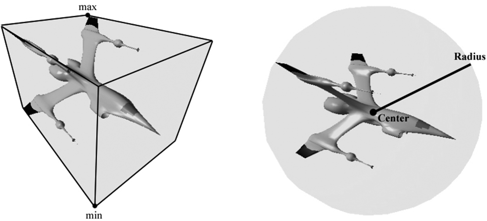
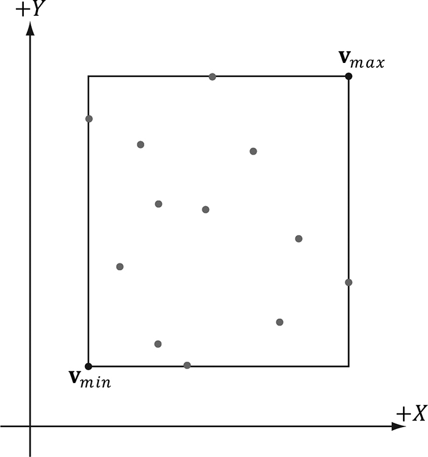
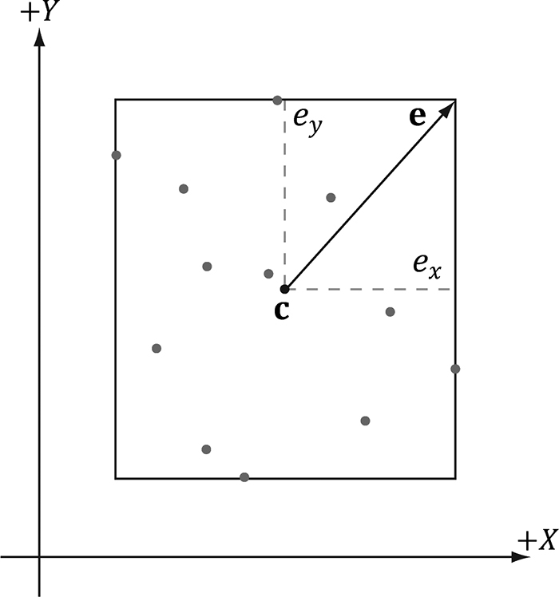
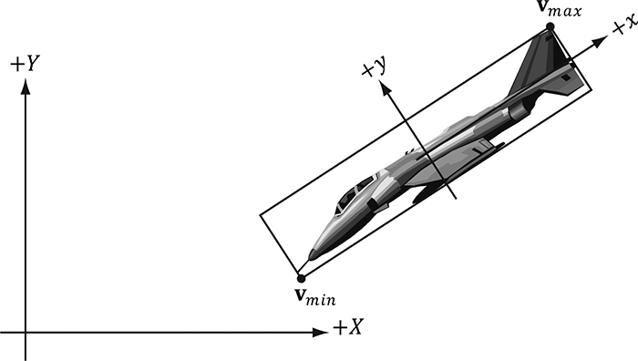
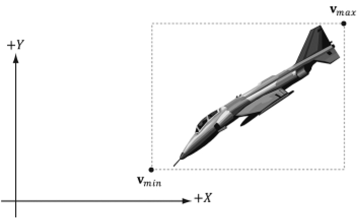
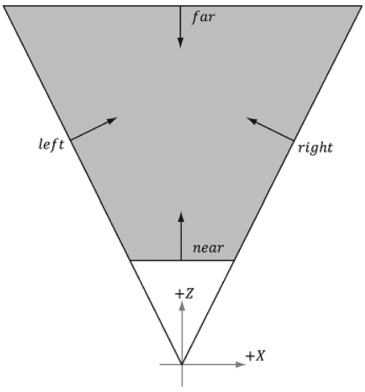
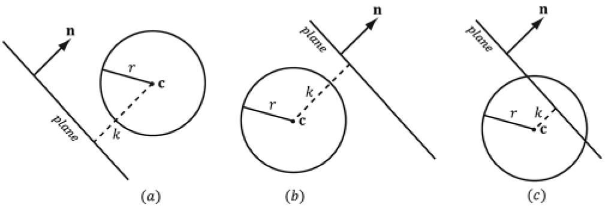
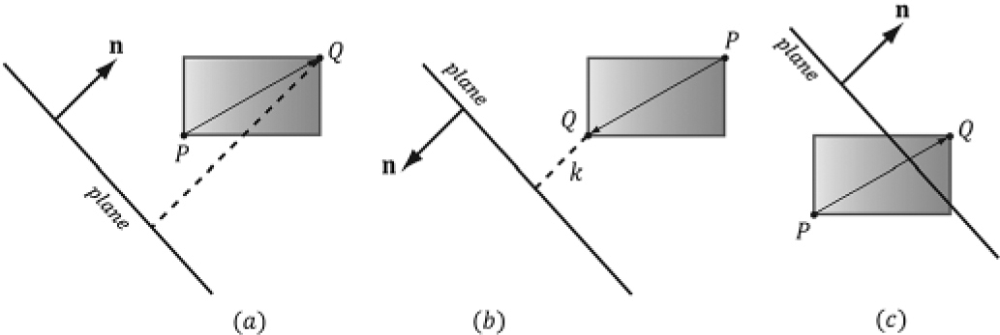
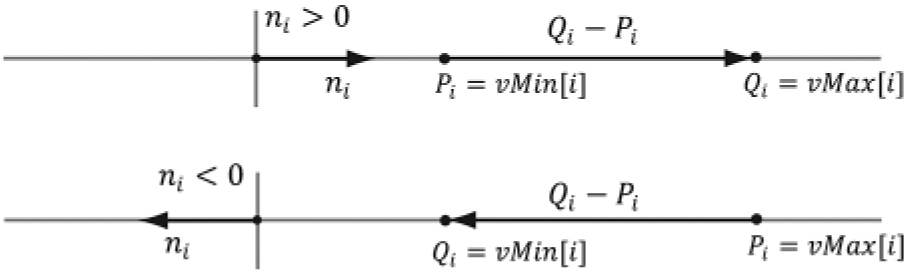
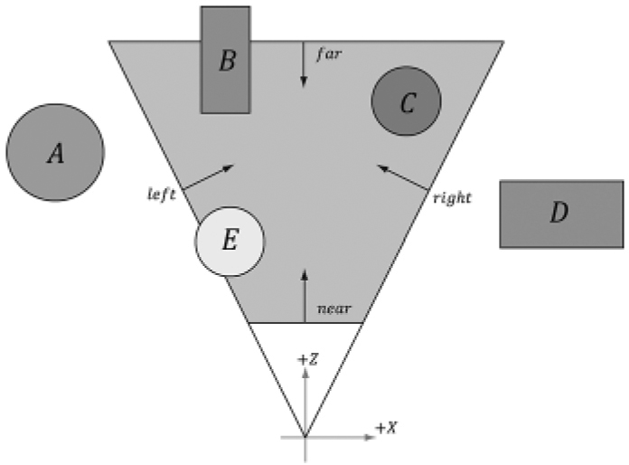
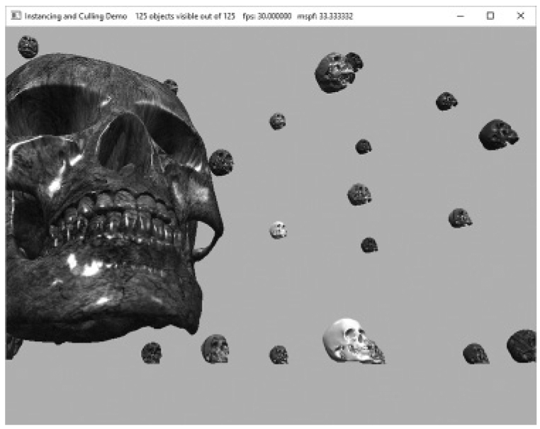
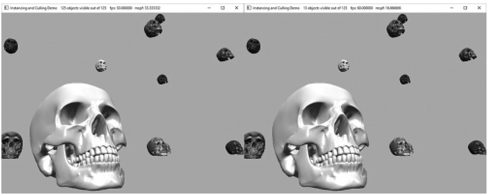
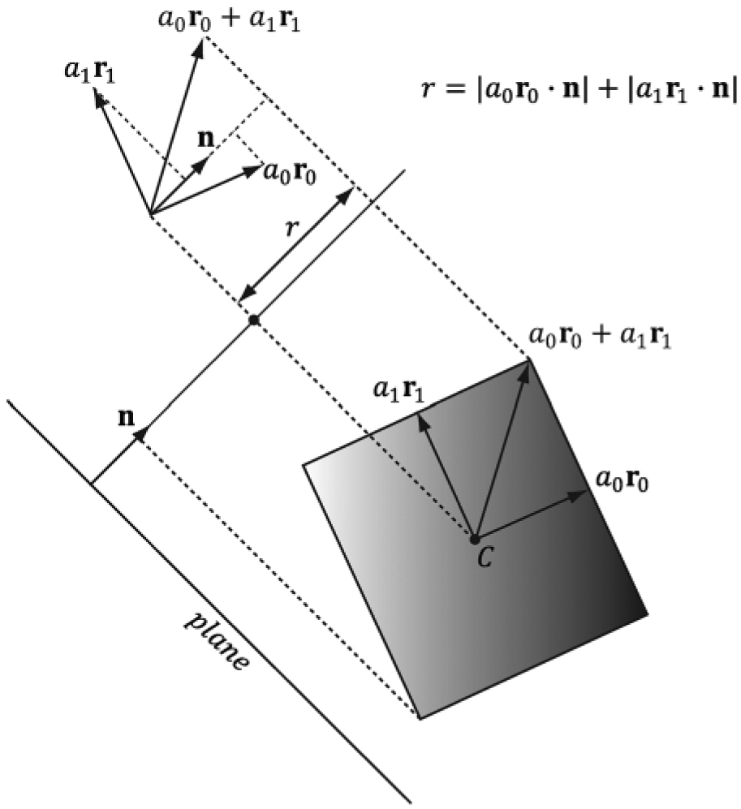